Segmentation, Mapping, Text
UCSD MGT 100 Week 02
Segmentation
- Putting the S into STP
- Note: I don’t duplicate the reading
Heterogeneity
A fancy way to say that customers differ, e.g.
Product needs–usage intensity, frequency, context; loyalty
- Most important dimension of heterogeneity, by far - This perspective differs from the readingDemographics–often overrated as predictors of behavior
Psychographics–Orientation to Art, Status, Religion, Family, …
Location
Experience
Information
Attitudes
Differences may predict purchases, wtp, usage, satisfaction, retention, …
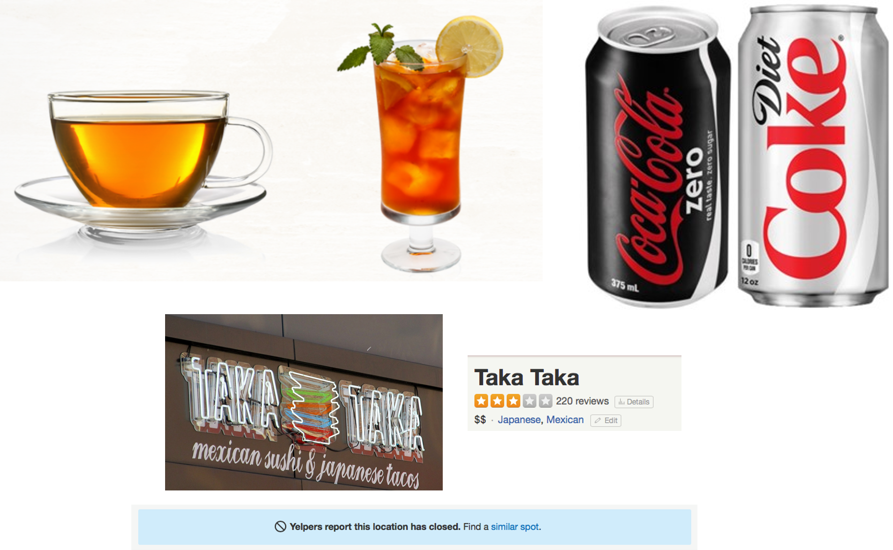
Market Segmentation
Segments: distinct customer groups with similar attributes within a segment, different attributes between segments
- Fundamental since the 1960s - Numerous segmentation techniques exist - Customer Response Profiles embody segments - B2B segments: customer needs, size, profitability, internal structureSegmentation should drive most customer decisions
Segments in this class, ranked by size
BE majors uninterested in Customers/Marketing
BE majors interested in Customers/Marketing
Non-BE majors, often minoring in Business, Marketing or Business Analytics
Measurable
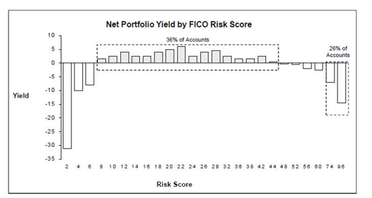
Substantial
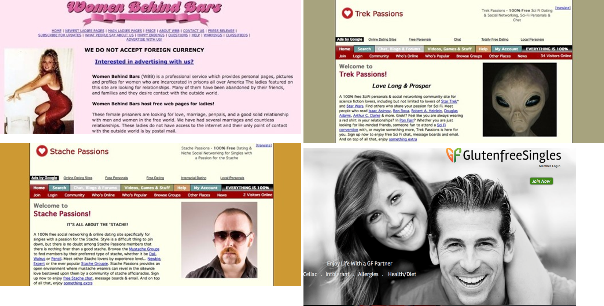
Is segmenting by gender sexist?
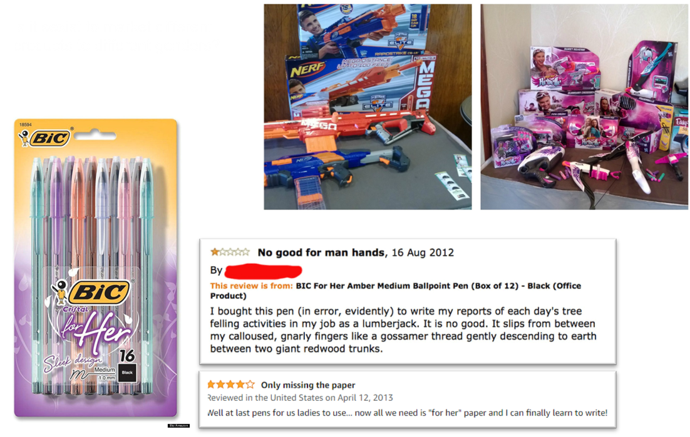
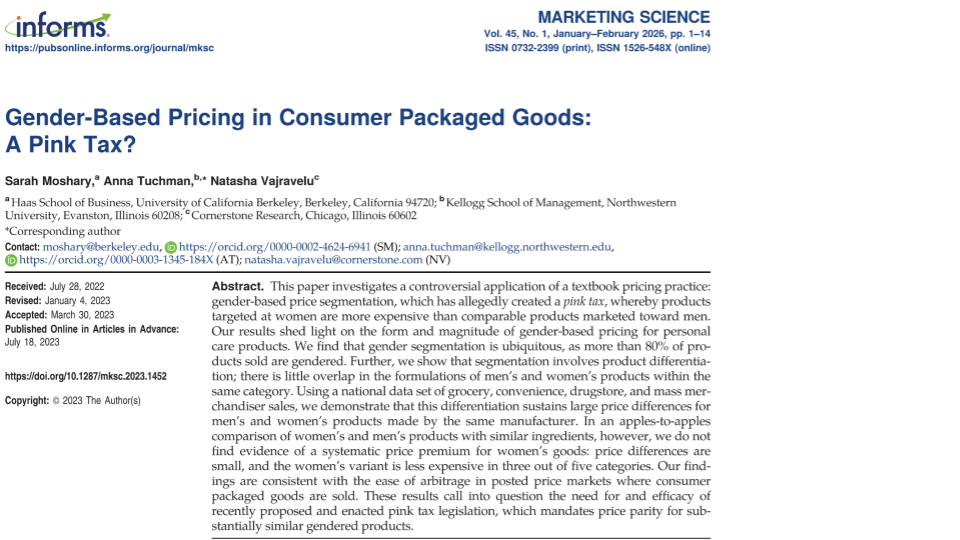
Customer demographics
In some markets– makeup, diapers, sports, shoes– demographics correlate strongly with behaviors
In most markets– smartphones, universities, software, cars– demographics correlate weakly with behaviors
Demographics don’t typically cause purchases, except when they predict real differences in customer needs
Why do we so often overrate demographics as predictors of behavior?
Segmentation in Action
- Who does it
- Browser example
- Why we keep it quiet
- Nearly every large business segments its markets
Firefox User Types
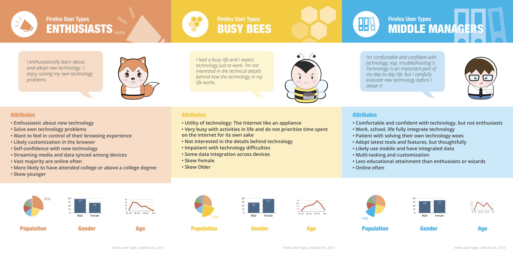
Firefox User Types
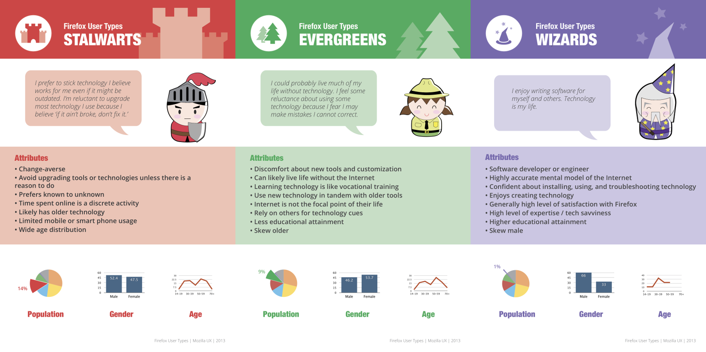
Firms don’t publicize segments
- UO website: “We stock our stores with what we love, calling on our — and our customer’s — interest in contemporary art, music and fashion. …
- “We offer a lifestyle-specific shopping experience for the educated, urban-minded individual in the 18 to 30 year-old range…’’
Firms don’t publicize segments
- Earnings call: “Our customer is from traditional homes and advantage, but this offers them the benefit of rebellion…
- Our customer is exposed to new ideas and philosophies. This can be a real involvement and work, or it could be just talk.
- Irreverence and concern can live together. Often products sell well that represent the concerns they have but also can speak to their irreverence.
- Our customer leads a pretty cloistered existence although they deem themselves worldly…they believe that they’re right and they believe that everything that’s happening to them is what’s happening everywhere.
- Our customer is highly involved in mating and dating behavior…one of the primary drives for their spending behavior…they work hard to postpone adulthood… ’’
Firms don’t publicize segments
- A. website: “a lifestyle brand that catered to creative, educated and affluent 30-45 year-old women…
- “Our customer is a creative-minded woman, who wants to look like herself, not the masses. She has a sense of adventure about what she wears, and although fashion is important to her, she is too busy enjoying life to be governed by the latest trends.’’
Firms don’t publicize segments
- Earnings call: “We don’t think of her in terms of age or affluence or even location. We try to think of her in her life stage and her sensibilities.
- “She’s recently wed. She’s settling down. She’s very interested less in the mating rituals and actually has been trying and building and creating an environment she wants to live in for herself and family.
- “She loves art and culture… And clothing and her living environment to her are canvases in which she’s able to express and control her life, whereas workplace and those things around her, she may not control.
- “We believe in many ways that’s what’s touched her and connect her to Anthropologie and why she is more loyal to us than to most retailers.’’
How we segment
- Customer Data Platform (CDP)
- Data Marketplaces
Customer Data Platform (CDP) - 4 jobs
Data collection
Intake data from numerous disparate sources: In-house, direct partners, data brokers, public dataData unification or harmonization
Authenticate and de-duplicate rows and columnsData comprehension
Generate inferences, test hypotheses, make predictions, estimate models Covers descriptive, diagnostic & predictive analyticsData activation
Prescriptive analytics: Use data to inform and automate marketing actions
Data Marketplaces
Automated platforms for transacting & transmitting data e.g. AWS Data Exchange, Databricks Marketplace, Snowflake Marketplace
Relatively recent phenomenonUpsides
Many data types and sources Easy subscriptions, automatic updates, automated wrangling Competitive marketplace may lower prices Enable complementarities with cloud storage, etcSome caveats
Low barriers to entry Questionable validation, trustworthiness, purchaser control May lead to a lemons/peaches market, but reviews may help
- Suppose we segment the smartphone market according to each customer’s desired brand.
- Is this a good approach?
How to pick attributes?
- We want to segment based on attributes that drive sales, profit, retention. But how?
- Theory, experience
- Market research
- Customer database
- Consult customer experts (salespeople)
- Find out what other firms are doing
- Let sales data pick for us (het. logit)
How GBK segments
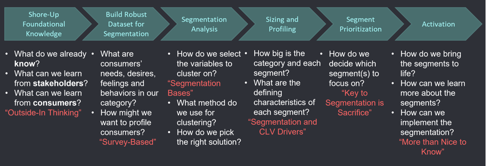
Cluster analysis
- “Unsupervised learning”:
techniques to classify, describe, summarize unlabeled data

K-Means
- Simple, elegant approach to define \(k=1,\ldots,K\) segments
- Main idea: Choose \(K\) centroids \(\{C_1, ..., C_K\}\) to minimize total within-segment variation:
\[ \min \sum_{k=1}^K W(C_k)\]
- where \(W(C_k)\) measures variation among customers assigned to segment \(k\)
K-Means
- Most common \(W(C_k)\) function is Euclidean distance
- Given a set of \(i \in I_k\) customers in segment \(k\), each with \(p=1,...,P\) measured attributes \(x_{ip}\),
\[ W(C_k)=\sqrt {\sum_{i \in I_k} \sum_{p} (x_{ip}-\bar{x}_{kp})^2}\]
where \(\bar{x}_{kp}\) is the average of \(\bar{x}_{ip}\) for all \(i \in I_k\), and the centroid is \(C_k=(\bar{x}_{k1}, ..., \bar{x}_{kP})\)
K-Means Algorithm
- How do we assign customers to segments?
- There are nearly \(K^n\) ways to partition \(n\) obs into \(K\) clusters
- Happily, a simple algorithm finds a local optimum:
Randomly choose \(K\) centroids
Assign every customer to nearest centroid
Compute new centroids based on customer assignments
Iterate 2-3 until convergence
(Optional) Repeat 1-4 for many random centroids
You will run this in Week 2 script Let's illustrate it in class
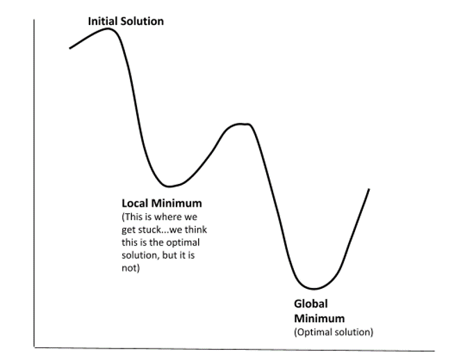
- We usually use 'hillclimbers' to optimize numeric functions
- Imagine I asked you to find the highest point on campus; how? On Earth?
- W(C_k) is not globally concave, so we can't guarantee a global minimum
- Thus, we pick many starting points, and see which offers the lowest W(C_k)
- Note: Some algos promise to find global minimum, but this is only provable for a globally convex function. This claim can be a 'tell'

- Meet your study group. Create a group chat. Schedule to meet weekly in person to discuss homework.
Market Mapping
- Positioning in attribute space
- Economic theories of differentiation: Vertical, horizontal
- PCA & Perceptual maps
Marketing strategy
Segmentation: How do customers differ
Targeting: Which segments do we seek to attract and serve
Positioning
- What value proposition do we present - How do our product's objective attributes compare to competitors - Where do customers perceive us to be - How do we want to influence consumer perceptionsMarket mapping helps with Positioning
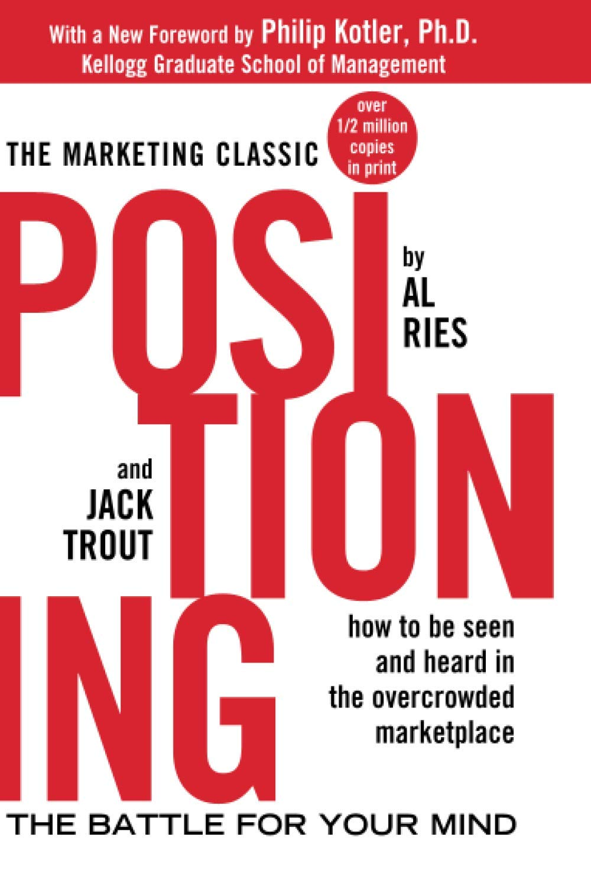
Market Maps
Market maps use customer data to depict competitive situations. Why?
- Understand brand/product positions in the market - Track changes - Identify new products or features to develop - Understand competitor imitation/differentiation decisions - Evaluate results of recent tactics - Cross-selling, advertising, identifying complements or substitutes, bundles...
Market maps
We often lack ground truth data
- Using a single map to set strategy is riskyRepeated mapping builds confidence
(“Movies, not pictures”)Many large brands do this regularly
Vertical Diff., AKA quality
- Product attributes where more is better, all else constant
- Efficacy, e.g. CPU speed or horsepower
- Efficiency, e.g. power consumption
- Input good quality (e.g. clothes, food)
- Important: not everyone buys the better option (why not?)
Horizontal Diff., AKA fit or match
- Product attributes w heterogeneous valuations
- Physical location
- Familiarity, e.g. what you grew up with
- Taste, e.g. sweetness or umami
- Brand image, e.g. Tide, Jif, Coca-Cola
- Complements, e.g. headphones or charging cables
Hotelling (1929)
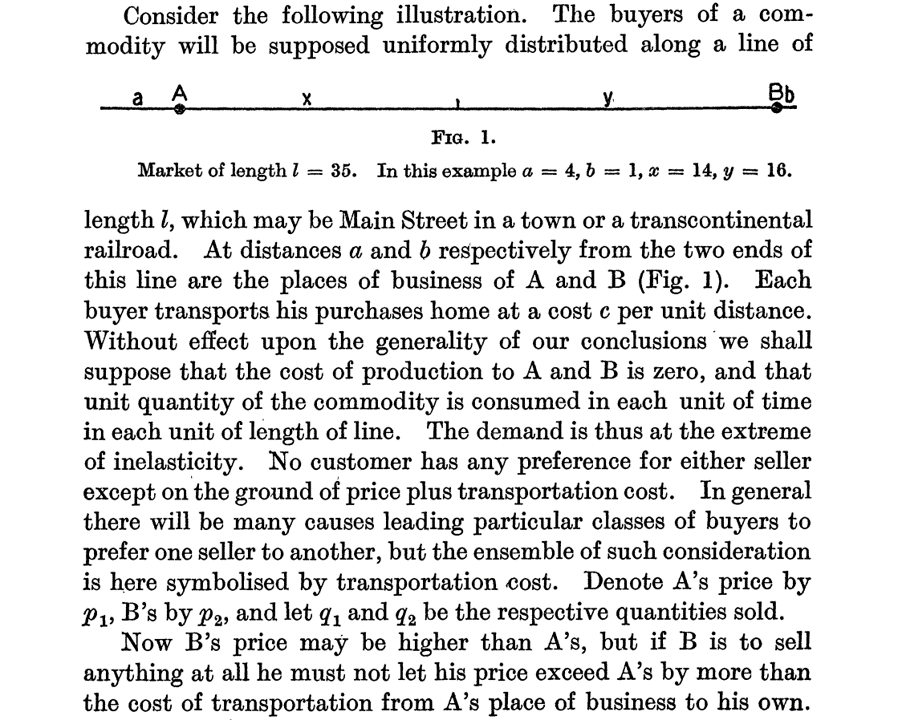
Ice cream vendors
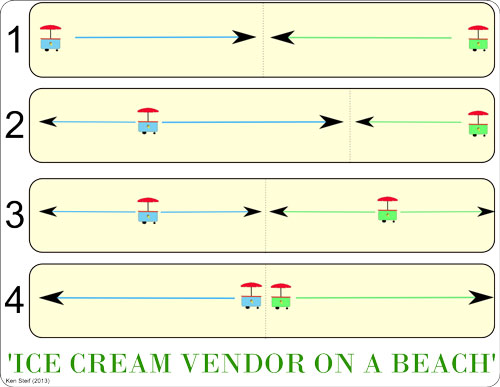
Median voter theorem
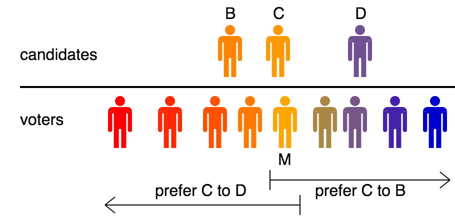
Suppose you are the UCSD Chancellor, tasked with increasing in-state freshman enrollments
You want to map UC campuses in the market for California freshman applicants
You posit that selectivity and time-to-degree matter most
- Students want to connect with smart students - Students want to graduate on time
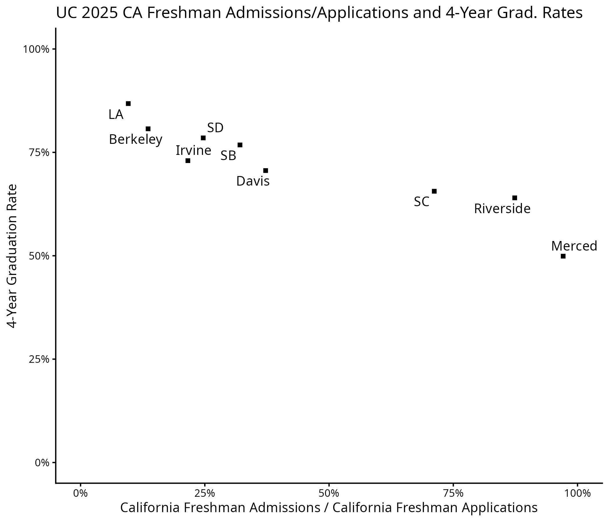
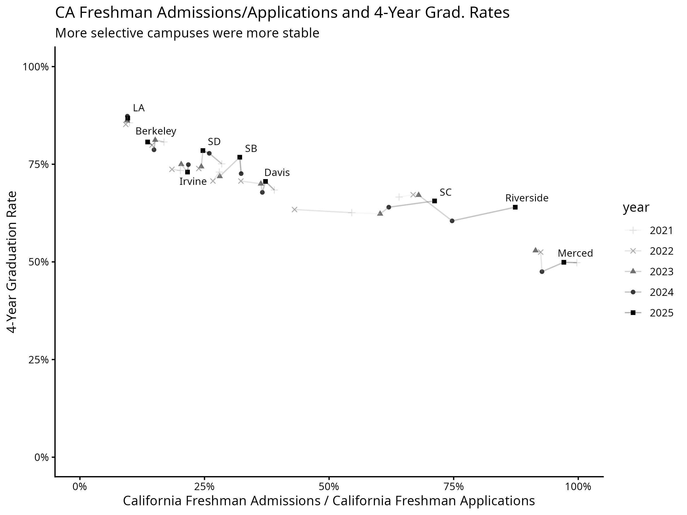
What if there are too many product attributes to graph?
Enter Principal Components Analysis
- Powerful way to summarize data - Projects high-dimensional data into a lower dimensional space - Designed to minimize information loss during compression - Pearson (1901) invented; Hotelling rediscovered (1933 & 36)
Principal Components Analysis (PCA)
Store \(K\) continuous attributes for \(J>K\) products in \(X\), a \(J\times K\) matrix
Consider \(X\) a \(K\)-dimensional space containing \(J\) points
Calculate \(X'X\), a \(K \times K\) covariance matrix of the attributes
1st \(n\) eigenvectors of the attribute covariance matrix give unit vectors to map products in \(n\)-dimensional space
- We'll use first 1 or 2 eigenvectors for visualization
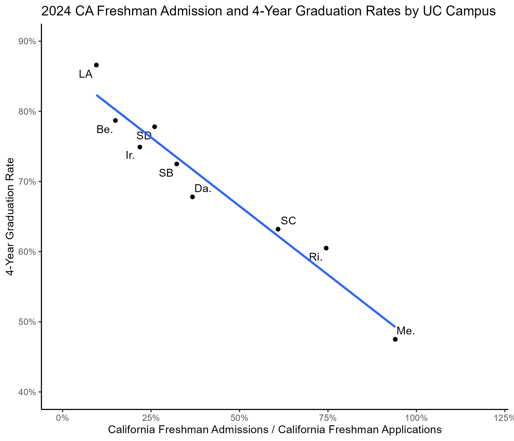
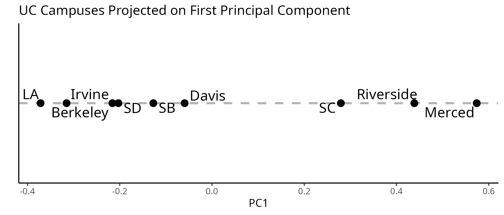
PCA FAQ
How do I interpret the principal components?
- Each principal component is a linear combination of the larger space's axes - Principal components are the "new axes" for the newly-compressed space - Principal components are always orthogonal to each other, by constructionWhat are the main assumptions of PCA?
- Variables are continuous and linearly related - Principal components that explain the most variation matter most - Drawbacks: information loss, reduced spatial interpretability, outlier sensitivityHow do I choose the # of principal components?
- Business criteria: 1 or 2 if you want to visualize the data - Business criteria: Or, value of compressed data in subsequent operations - Statistical criteria: Cume variance explained, scree plot, eigenvalue > 1What are some similar tools to PCA?
- Factor analysis, linear discriminant analysis, independent component analysis...
How does PCA relate to K-means?
K-Means identifies clusters within a dataset
- K-Means augments a dataset by identifying similarities within it - K-Means never discards dataPCA combines data dimensions to condense data with minimal information loss
- PCA is designed to optimally reduce data dimensionality - PCA facilitates visual interpretation but does not identify similaritiesBoth are unsupervised ML algos
- Both have "tuning parameters" (e.g. # segments, # principal components) - They serve different purposes & can be used together - E.g. run PCA to first compress large data, then K-Means to group points - Or, K-Means to identify clusters, then PCA to visualize them in 2D space
Conceptual organization
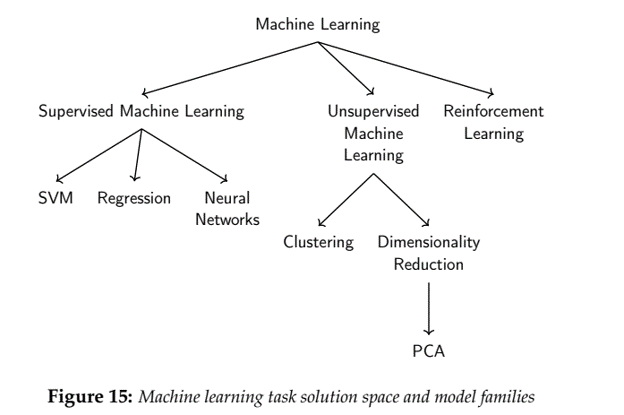
Mapping Practicalities
How to measure intangible attributes like trust?
- Ask consumers, e.g. "How much do you trust this brand?" - Marketing Research techniques measure subjective attributes and perceptionsWhat if we don’t know, or can’t measure, the most important attributes?
- Multidimensional scalingHow should we weigh attributes?
Do we know the most important attributes?
- Multidimensional scaling draws perceptual maps
Suppose you can measure product similarity
For \(J\) products, populate the \(J\times J\) matrix of similarity scores
- With J brands, we have J points in J dimensions. Each dimension j indicates similarity to brand j. PCA can projects J dimensions into 2D for plottingUse PCA to reduce to a lower-dimensional space
- Pro: We don't need to predefine attributes - Con: Axes can be hard to interpret
Multidimensional scaling
MDS Intuition, in 2D space
- With a ruler and map, measure distances between 20 US cities ("similarity")
- Record distances in a 20x20 matrix: PCA into 2D should recreate the map
- But, we don't usually know the map we are recreating, so we look for ground-truth comparisons to indicate credibility and reliability
Examples:
- Poli Sci: Political candidate positioning, eg left to right
- Psychologists: Understand perceptions and evaluation of personality traits
- Marketers: how consumers perceive brands or productsExample: Netzer et al. (2012)
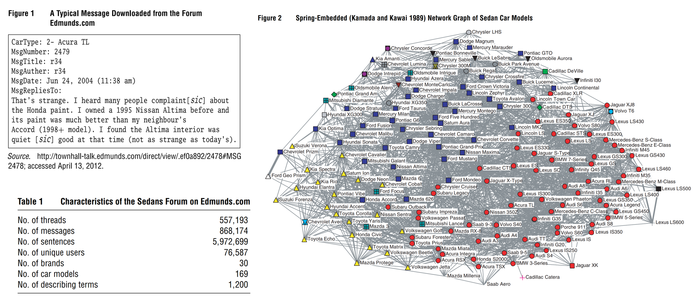
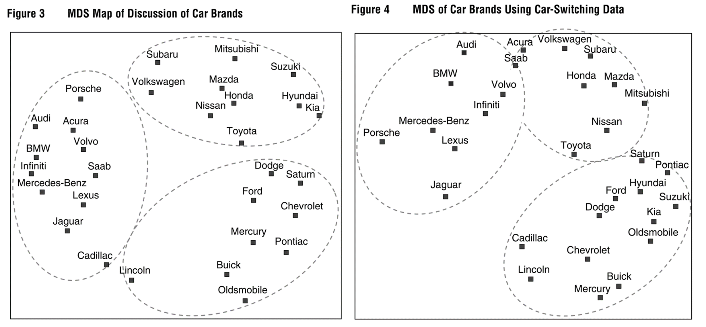
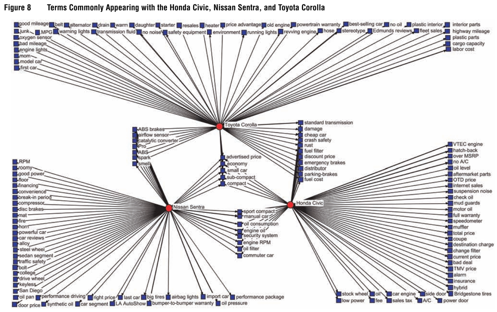
How to weigh product attributes?
Demand modeling uses product attributes and prices to explain customer purchases
Heterogeneous demand modeling uses product attributes, prices and customer attributes to explain purchases
- "Revealed preferences": Demand models explain observed choices in uncontrolled market environments
Text data
- The Challenge
- Embeddings
- LLMs: What are they doing
- What does it all mean?
The Challenge
Suppose an English speaker knows \(n\) words, say \(n=10,000\)
How many unique strings of \(N\) words can they generate?
- N=1: 10,000 - N=2: 10,000^2=100,000,000 - N=3: 10,000^3=1,000,000,000,000=1 Trillion - N=4: 10,000^4=10^16 - N=5: 10,000^5=10^20 - N=6: 10,000^5=10^24=1 Trillion Trillions - ....Why do we make kids learn proper grammar?
- Average formal written English sentence is ~15 words
Embeddings
represent words as vectors in high-dim space
- Really, "tokens," but assume words==tokens for simplicityAssume \(W\) words, \(A<W\) abstract concepts
- Assume we have all text data from all history. Each sentence is a point in $W$-dimensional spaceWe could run PCA to reduce from \(W\) to \(A\) dimensions
- Assume we have infinite computing resources - We now have every sentence represented as a point in continuous A-space
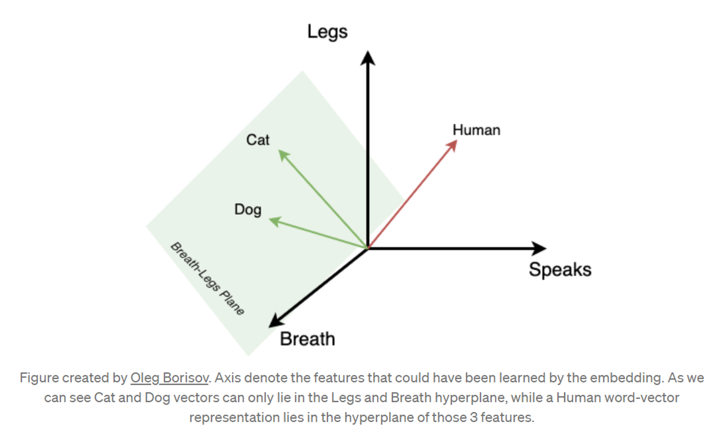
Cool things about embeddings
- Compression stores enormous textual data in a small space, other than human memory
- We can do math using words!
Many ways to encode embeddings
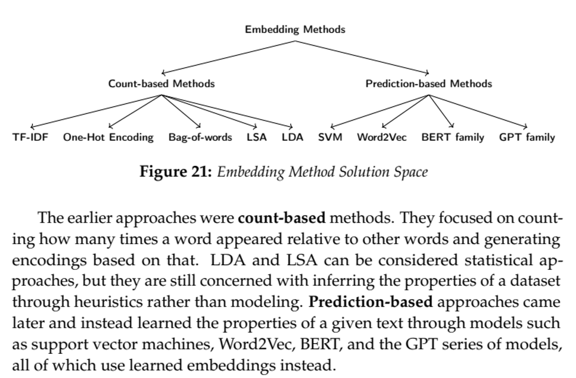
LLMs: Given a prompt,
Recode prompt to maximize contextual understanding
- 'the bank of the river is steep' vs 'the bank near the river is solvent' - This is the 'attention' step you hear a lot about - Basically, modify every word's location based on every other word's position in the prompt sequenceFeed recoded prompt into transformer as a sequence of points in concept-space
Predict the next point and add it to the sequence
Repeat step 3 until no more good predictions
Repeat steps 1-4 many many times, then hire humans to evaluate results, use evaluations for RLHF to refine the process
Add ‘reasoning’ via reinforcement learners, and ‘deep research’ via agentic tool use
Sell access to customers, then train a bigger LLM
Example: Concept Space
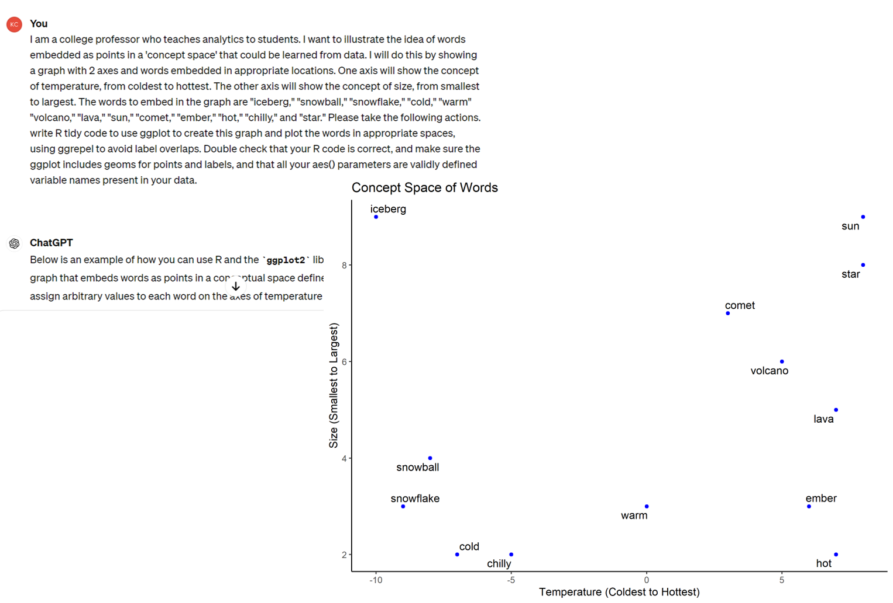
Example: Sentences as Vector Sequences
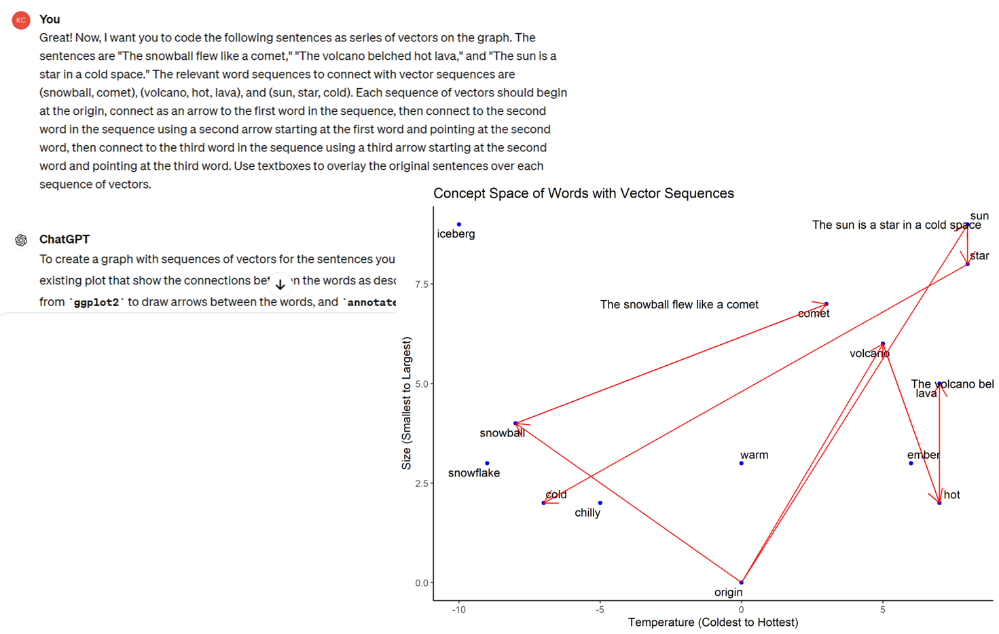
What LLMs Can and Can’t Do
Can generate intelligible semantic sequences
Can summarize large text training data sets
Can help humans save time and effort in semantic tasks
Can uncover previously unknown relations in training data
Can’t distinguish truth from frequency in training data
- LLMs propagate popular biases in training data, unless taught otherwiseCan’t reliably evaluate sequences absent from training data
Can’t discover new relationships absent in training data
Can’t think, reason, imagine, feel, want, question
- But might complement other components that do such things
What happens next?
No way to know. The tech is far ahead of science
- LLMs are productive combinations of pre-existing components - This is normal: Eng/ML/stats theory chases applications - Spellchecker and calculator are not productive analogiesMy guesses
- "It's easy to predict everything, except for the future." - Simple tasks: LLMs outcompete humans - Medium-complexity tasks: LLMs help low-skill humans compete - Complex tasks: Skillful LLM use requires highly skilled humans - Law matters a LOT: Liability, copyright, privacy, disclosure - In eqm, typical quality should rise; *not* using LLMs will handicap - Long term: More automation, more products, more concentration of capital - More word math techniques will be invented, some will be usefulWhat future tech might complement LLMs?
- Reframes current argument about Sentient AI - Robots? World models? Causal reasoning engines? Volition?
Class script
- Standardizing variables
- Iris example
- Running & graphing kmeans
- Use PCA to map the smartphone market

Wrapping up
Recap
Segmentation should be based on customer needs
Customer behavior best predicts behavior (not demos)
Market maps depict competition, aide positioning
PCA projects high-dim data into low-dim space w minimal information loss
Embeddings represent words as points in concept-space, enabling word-math
Next week's reading helps avoid or reduce struggle

Going further
- Deep Dive into LLMs like ChatGPT by Karpathy (2025)
- Tracing the thoughts of a large language model
- K-Means Clustering: An Explorable Explainer
- Learning the k in k-means (Hammerly and Elkan 2003)